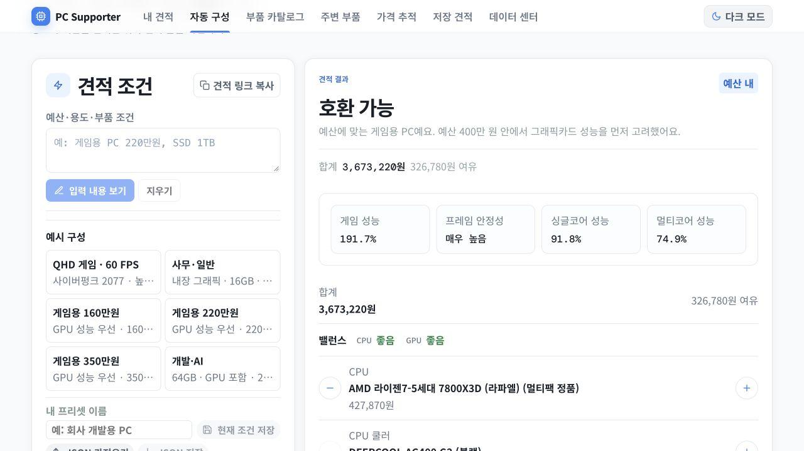

PC Supporter · 2026년 10월 6일 피드백
어떻게 고쳤고,
무엇을 확인했는가
13개 요청 반영 · 실제 API 9개 교체 시나리오 통과 · 11개 예산 구간 생성 통과배포 버전 2.61.1 · 릴리스 20261006124045
배포된 서비스 열기

Azure에 배포한 실제 결과 화면요청별 대응
좋음살짝 약함 · 살짝 강함너무 약함 · 너무 강함
| # | 요청 | 반영 내용 |
|---|
| 1 | 상단 바 여백 | 내부 높이를 84px에서 52px로 줄이고 로고 아이콘을 44px에서 30px로 줄였다. 모바일 버튼의 터치 영역은 44px 이상 유지한다. |
|---|
| 2 | CPU 추천 학습 | 20개 CPU의 게임 성능 자료를 정리했다. 영상의 과거 가격 대신 현재 CPU·보드·RAM·쿨러 총비용을 비교해 가성비 후보를 고른다. GPU에 필요한 CPU 수준을 먼저 맞춘다. |
|---|
| 3 | CPU 수동 순서 | 9800X3D → 9850X3D → 9900X3D → 9950X3D 순서와 역방향으로 이동한다. 수동 순서는 게임 성능 순위와 별도로 관리한다. |
|---|
| 4 | GPU 가격 갱신 | 상품 코드가 일치하는 실제 판매 가격을 반영한다. 판매처가 사라졌다고 확인된 상품은 예전 가격을 제거한다. 네트워크 오류만으로 가격을 지우지 않으며, 최신 판매가가 확인되면 복구한다. RTX 50·RX 90 모델과 VRAM별 대표 상품을 먼저 갱신한다. |
|---|
| 5 | 필요·권장 사양 제거 | 자동 구성과 최종 결과에서 해당 패널을 제거했다. 결과에 CPU·GPU 밸런스 행을 넣었다. |
|---|
| 6 | 5단계 밸런스 | 너무 약함 / 살짝 약함 / 좋음 / 살짝 강함 / 너무 강함을 표시한다. 좋음은 초록, 살짝은 주황, 너무는 빨강이다. 5600+5090과 9800X3D+3050의 성능 불균형을 표시한다. 물리적 호환 여부는 별도로 검사한다. |
|---|
| 7 | SSD 선택과 용량 조정 | 요청 용량의 실제 C910G가 있으면 우선 사용한다. 없으면 같은 용량의 삼성전자·SK하이닉스 M.2 NVMe에서 용량당 가격이 가장 낮은 제품을 선택한다. 성능 우선 설정도 이 기준을 덮지 않는다. 수동으로 고른 SSD는 유지한다. |
|---|
| 8 | CPU·RAM 토글 | AMD/Intel과 DDR4/DDR5 버튼을 추가했다. 클릭하지 않으면 자동 선택과 현재 결과를 표시한다. 직접 선택한 조건은 재생성·프리셋·링크에 유지한다. |
|---|
| 9 | 수동 부품 교체 | 결과의 부품 이름을 눌러 제품을 검색하고 바꿀 수 있다. CPU 변경은 보드·RAM·쿨러·파워를, GPU 변경은 파워·케이스를 다시 맞춘다. 테스트에 허용한 구형 Ryzen과 지정 RAM도 선택할 수 있다. |
|---|
| 10 | 합계 위치 | 부품 조정 영역에 합계와 예산 여유·초과 금액을 표시한다. 목록을 스크롤하면서 변경 금액을 확인할 수 있다. |
|---|
| 11 | 예산 입력 | 예산 전용 −/+ 버튼을 제거했다. 왼쪽 목표 예산에 숫자를 입력해 수정한다. |
|---|
| 12 | 결과 화면 정리 | 합계 아래 하늘색 박스, 성능 제목·안내 문장, 숫자 아래 설명, 성능 지표의 물음표와 테스트 영상 링크를 제거했다. 게임 성능·프레임 안정성·싱글코어·멀티코어 값은 유지한다. |
|---|
| 13 | 단위와 쿨러 정보 | CPU 쿨러의 표시 요약에서 소켓을 제거했다. SSD 1000GB는 1TB로 표시한다. |
|---|
실제 서버에서 생성한 예산별 견적
게임용 예산 구성, RAM 최소 16GB, SSD 1TB, 국내 신품·멀티팩 조건을 요청해 확인했다. 표의 금액은 검증 당시 카탈로그 가격이다. 필수 CPU·전원·장착 조건을 지키며 GPU 성능을 먼저 고려한다.
최상위 GPU도 별도로 확인했다. 검증 가능한 가장 저렴한 RTX 5090 상품은 8,990,000원이며, 같은 조건의 7800X3D·RTX 5090 구성 합계는 10,468,880원으로 1,000만원 상한을 넘는다. 이번 예산 범위에서는 RTX 5080을 선택했다.
| 목표 예산 | 합계 | CPU | GPU |
|---|
| 80만원 | 769,530원 | AMD 라이젠5-4세대 5500GT (세잔) (멀티팩 정품) | 내장 그래픽 |
|---|
| 100만원 | 769,530원 | AMD 라이젠5-4세대 5500GT (세잔) (멀티팩 정품) | 내장 그래픽 |
|---|
| 120만원 | 1,078,600원 | AMD 라이젠5-4세대 5600 (버미어) (멀티팩 정품) | 갤럭시 GALAZ 지포스 RTX 5050 BLACK OC D6 8GB DUAL HDMI |
|---|
| 140만원 | 1,397,600원 | AMD 라이젠5-4세대 5600 (버미어) (멀티팩 정품) | PNY 지포스 RTX 5060 Ti OC D7 8GB Dual Fan 한성컴퓨터 |
|---|
| 160만원 | 1,397,600원 | AMD 라이젠5-4세대 5600 (버미어) (멀티팩 정품) | PNY 지포스 RTX 5060 Ti OC D7 8GB Dual Fan 한성컴퓨터 |
|---|
| 180만원 | 1,644,980원 | AMD 라이젠5-4세대 5600 (버미어) (멀티팩 정품) | GIGABYTE 지포스 RTX 5060 Ti WINDFORCE OC D7 16GB 피씨디렉트 |
|---|
| 220만원 | 1,644,980원 | AMD 라이젠5-4세대 5600 (버미어) (멀티팩 정품) | GIGABYTE 지포스 RTX 5060 Ti WINDFORCE OC D7 16GB 피씨디렉트 |
|---|
| 300만원 | 2,327,840원 | AMD 라이젠5-5세대 7500F (라파엘) (멀티팩 정품) | MSI 지포스 RTX 5070 벤투스 2X OC D7 12GB |
|---|
| 400만원 | 3,673,220원 | AMD 라이젠7-5세대 7800X3D (라파엘) (멀티팩 정품) | GAINWARD 지포스 RTX 5080 피닉스 D7 16GB |
|---|
| 600만원 | 4,014,160원 | AMD 라이젠7-5세대 7800X3D (라파엘) (멀티팩 정품) | GAINWARD 지포스 RTX 5080 피닉스 D7 16GB |
|---|
| 1,000만원 | 4,014,160원 | AMD 라이젠7-5세대 7800X3D (라파엘) (멀티팩 정품) | GAINWARD 지포스 RTX 5080 피닉스 D7 16GB |
|---|
직접 바꿔본 시나리오
- 통과 5600 → 7500F: AM5 보드·DDR5 RAM 자동 전환
- 통과 5600 + RTX 5090: CPU 너무 약함 표시
- 통과 9800X3D + RTX 3050: CPU 너무 강함 표시
- 통과 Intel + DDR4 생성
- 통과 Intel + DDR5 생성
- 통과 DDR4 직접 선택 시 맞지 않는 CPU 단계 제외
- 통과 9800X3D → 9850X3D → 9900X3D → 9950X3D 이동
- 통과 AMD GPU 수동 선택과 파워·케이스 재구성
- 통과 SSD 용량 1TB → 2TB → C910G 1TB 변경
추천 데이터의 범위
신성조 CPU 영상의 GPU별 FHD 게임 성능 자료를 분리해 사용한다. 유료 모델 파인튜닝 없이 추천 데이터·규칙을 학습하고 검증했다. 7500F·13400F·14400F는 확보한 캡처에 해당 측정 행이 없어, 측정 퍼센트를 만들지 않고 파생 추천 규칙으로 구분했다. GPU별 CPU 매핑과 5단계 기준은 프로젝트 추천 정책이며 실제 병목률 측정값은 아니다.
현재 Intel 구성은 공식 전력 조건을 확인한 12100F·14100F·13400F·14400F·14600KF 및 검증된 B760M AORUS ELITE DDR4/DDR5 보드 경로로 제한한다. 전원부 출력 watt 값을 만들어 넣지 않았다. 설치 BIOS와 안정성 개선 마이크로코드는 구매 전 확인 대상으로 남긴다.
검증 기록
통합 테스트 24개 파일·555개 통과. 전체 상품 갱신과 가격 복원 방지 46개, CPU·보드·SSD 후속 검증 70개, SSD 가성비 우선 회귀 검증 67개도 각각 통과했다. 이 수치는 겹치는 테스트를 포함하므로 합산하지 않았다. 최종 타입 검사·클라이언트 빌드·번들 크기 검사, PC·모바일·다크 모드 화면 검증을 마쳤다.
Azure에 API와 가격 갱신 worker를 배포하고 DB 준비 상태를 확인했다. 배포 전 DB와 운영 파일 백업을 보존했다. 기존 서비스 주소도 새 버전으로 응답한다.